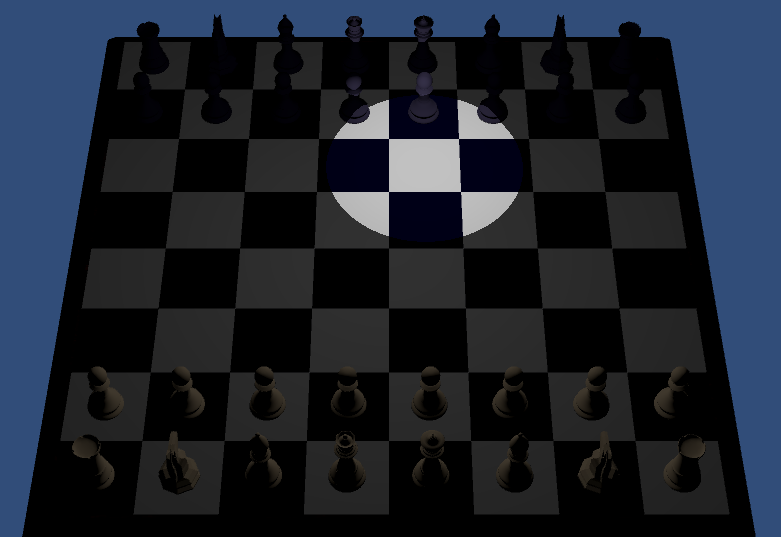
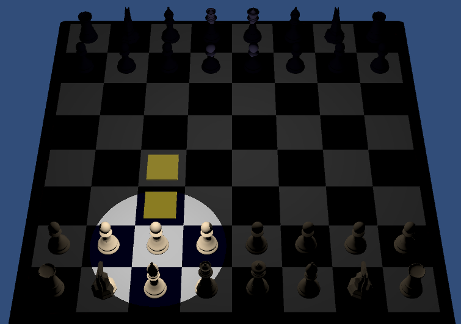
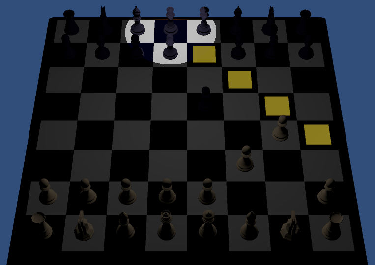

<table border="1" >
<tr>
<td align="center" style="text-align:left;">
<br />

<b>Developers</b></br >
Isaiah Snow<br />
Nic Chambers<br />
Carlos Nuñez<br />
</td>
<td>
<p><b><u>VR Chess:</u></b></p>
<p>We wanted to give players a new perspective on chess by utilizing VR. This application can be played with 2 players - one through the computer screen and one with a VR headset. The VR user is scaled down to match the size of the pieces and can pick them up with their hands to place them while the computer player clicks on the screen. Includes functional voice commands!
</p>
<p>
<a href="https://drive.google.com/file/d/1If3cGtrp9xxKMeVUHPwGojAaFejtdLcw/view?usp=sharing">Project Proposal</a> &nbsp;&nbsp;&nbsp;&nbsp;	
<a href="https://youtu.be/BDqU5pV4uAc">Gameplay Video</a> &nbsp;&nbsp;&nbsp;&nbsp;
<a href="https://drive.google.com/file/d/1WnNSTpvmJI3sNU_HXjmck0hu7LxX-ttG/view?usp=sharing">EXE Download</a>
<br />



</td>
</tr>
</table>